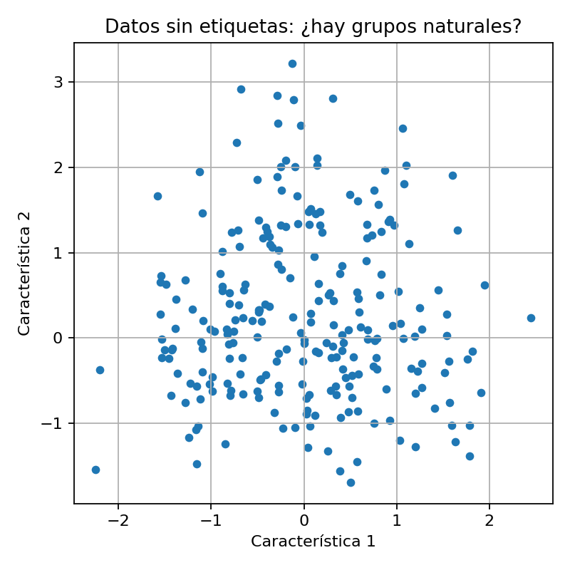

Aprendizaje no supervisado y Clustering
Nahuel Statuto
Caso típico: tenemos datos, pero no “respuestas correctas”.
Ejemplos rápidos:
Idea clave
Antes de predecir, muchas veces necesitamos explorar y agrupar.
Etiquetar datos suele ser caro, lento o ambiguo.
Resultado: clustering para descubrir grupos y perfiles.
Diferencia clave: qué señal de aprendizaje recibe el algoritmo.
Aprende a predecir a partir de ejemplos con etiqueta.
Señal: respuesta "correcta"
Descubre estructura sin etiquetas.
Señal: patrones en los datos
Decide acciones para maximizar recompensa.
Señal: recompensa
Idea: cosas parecidas van juntas.
Pregunta clave
¿Qué significa “parecido”?
Depende de las variables que elegimos y de una distancia.
Hoy: construiremos k-means.
Tenemos puntos “sin etiqueta”. Queremos agruparlos en K grupos.
Preguntas: ¿qué es un grupo? ¿cómo lo representamos?
Patrón: asignar ↔ actualizar
Observa: los centros se mueven → los grupos se estabilizan.
Pregunta: ¿cómo elegimos K?
Probamos varios K y medimos el error (inercia). Elegimos el “codo”: donde la mejora empieza a ser pequeña.
Ojo: la inicialización puede influir.
En esencia: estilos y actitudes al enseñar con tecnología.
Nota: n=21. Lectura exploratoria (tipologías, no conclusiones fuertes).
Idea
“No buscamos ‘mejor’ o ‘peor’” → buscamos perfiles para entender cómo se enseña con tech.
Ahora: clustering (k-means) sobre respuestas.
Pregunta: ¿cuántos perfiles describen al grupo?
K=2 (6 / 15)
K=3 (6 / 7 / 8)
K=4 (2 / 7 / 11 / 1)
Con esto y un bizcocho hasta mañana a las 8.
Whit this and a cake until tomorrow at 8.